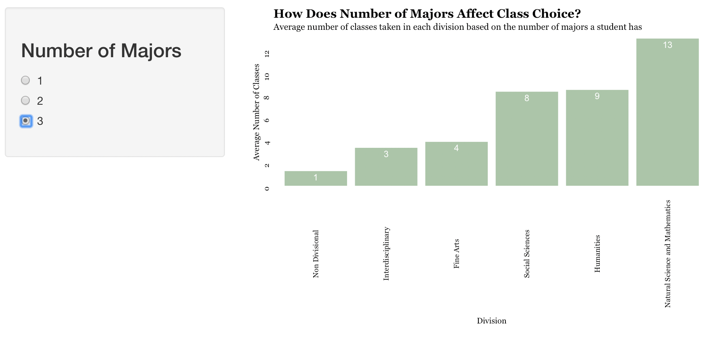
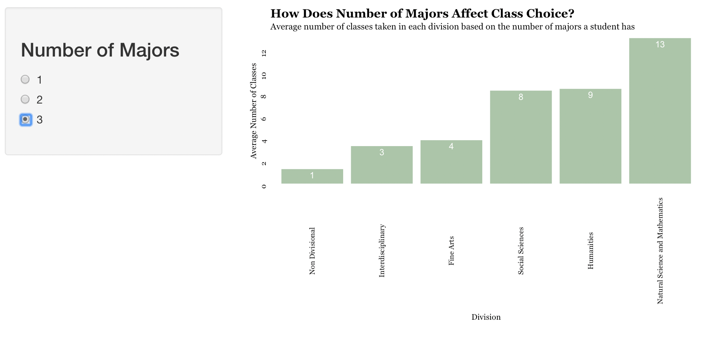
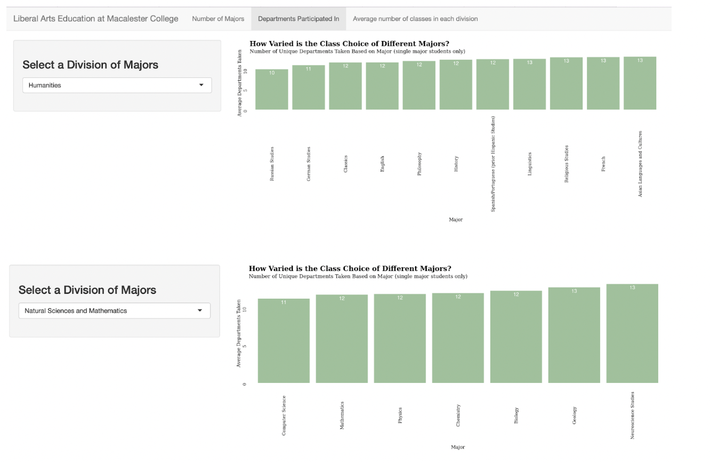

Liberal Arts Education at Macalester
What does it look like to be a liberal arts student at Macalester?
Shiny Application: https://nkent.shinyapps.io/DS-FinalProject/
Introduction
How do students choose to take classes in a breadth of areas to fulfill both general requirements and major specific ones? The data set we are examining shows data from Macalester students who graduated from 2013-2018 regarding information like graduation year, sex, major(s), minor(s), number of classes taken in departments/divisions etc. Because the data provides a holistic view on a student’s education, we want to examine how students of any major interact with classes. How does the number of majors change the number of classes in each division? How does major affect the number of unique departments taken? How does the division of majors affect the number of classes taken within each division? We hope that by approaching the topic from a few different perspectives such as major count, unique departments, and department variety, we can learn a little bit about what it means to be a student, regardless of what category one may fall into.
Distribution of Classes by Number of Majors
This visualization shows the difference in the types of classes that students take depending on how many majors they have. Selecting one, two, or three majors will subsect the data and show how many classes in each division students with the selected number of majors took. Interestingly enough, there is little difference between the number of classes a student takes with one or two majors. But you can see that when you look at the students with three majors, the Natural Science and Mathematics bar is clearly taller than the rest of the divisions. The reason for this may be because it’s easier to have multiple majors within the Natural Science and Math division because there is some overlap between the requirements for majors within that division. When looking at students with one major, Natural Science and Math, Humanities, and Social Sciences are relatively equal which shows that majors in those divisions are equally popular among students with one major. Examining the graph that shows that of students with two majors, the Humanities majors take slightly more classes than the Natural Science and Math majors. The reason for this may be because those majors often pair well with majors in other divisions. For example, students may choose to major in a language and pair that with a major in the Interdisciplinary division. There also might not be enough data to draw clear conclusions; out of the approximately 2,500 students looked at, there are about 1800 students who had one major and 650 who had two. This number drops significantly when looking at students who had three majors (19).
 

Department Variety By Major
How do students take courses in and out of their major? Do some majors attract students that take many courses outside of their major? One way to explore how “diverse” Mac students are in terms of their course selection is by looking at how many total departments there are in which a student took a course. This visualization shows how many unique departments each major has taken, with the significant caveat that this filters out all students with more than one major. Doing so results in a different amount of students in each department, but is worth doing because including students with multiple majors would skew certain majors to further extremes. For example, as seen by the visualization of “Number of classes in a division by major” we see that science and math majors are more likely to have multiple majors, and those majors are often within the same division. If we included double and triple majors in this data set, science and math majors could appear significantly less diverse because those students with multiple majors are taking many classes in few departments. Between 2013 and 2018, the average number of unique department prefixes a student took over their time at Macalester was about 12 (11.88 precisely). Some notable departments with low amounts of “department diversity” are Russian Studies, Music, and Women, Gender and Sexuality Studies, and some notable departments with high amounts are American Studies, Sociology, and Latin American Studies. While Interdisciplinary and Social Sciences are the two divisions with the highest average diversity, and Humanities and Natural Science and Math are the two with the least, the divisions are still relatively similar to each other. In fact, all the divisions have between 12-13 majors, with the exception of Fine Arts, which only has three majors. One would expect, based on stereotypes, that STEM majors, for example, might be the least flexible.
This visualization, however, shows that while there is definitely a discrepancy between majors, it is not especially large; the range between Russian Studies, the minimum, and Latin American Studies, the maximum is only 4.25. If we separate based on division, we get a similar picture, and find that the average number of departments taken for Humanities is the same as Math, around 12.1!  The most important conclusion of this data is that Macalester does a good job of encouraging students to take a wide variety of classes. All divisions have a similar range of unique departments (about three), and when the visualization is expanded to show all majors, the range grows to only 4.25.
Distribution of Classes Taken Among Divisions
Our last visualization shows the average number of classes taken in each division based on the division of the major. It’s important to note that students who had more than one major were counted twice; for example, a Math and Biology double major would have been considered two “people” and course count was considered twice. This is fine to do because if you are majoring in biology and math your class distribution should be shown as a biology major and a math major separately, since that reflects your course choice/interests as a student.
The first thing we notice is that students with majors within the Natural Science and Mathematics division tend to be the most focused on their own division; the discrepancy between Science/Math classes they take and classes they take in other divisions is the greatest. On average, the number of classes that a Natural Science and Math division major would take in that division is 20. On the other hand, the same students would take on average 16 classes outside of the Natural Science and Math division. This makes sense because students majoring in Natural Science and Math departments will often have to take extra classes outside of their majors department. So for example, a physics major would have to take many physics classes, but then also take some math classes and possibly other science classes. All of these classes would be counted as a Natural Science and Math class, therefore the count of Natural Science and Math classes for a physics major(and other math and science majors) would be unusually high.
The division that had the most equal spread of classes among the five division were the Interdisciplinary majors, which makes sense because Interdisciplinary inherently means relating to more than one branch of knowledge. Those that are learning about multiple subjects would essentially have to take classes in multiple divisions to fulfill the requirements. Another division of majors that had a more balanced variety in the average number of classes taken among divisions is the Social Science majors. To visualize the statements a little more, on average someone majoring in an Interdisciplinary major will take about 12 classes in the Interdisciplinary division, and take about 23 classes outside of the Interdisciplinary division. Similarly, students majoring in Social Sciences will on average take about 14 classes in the Social Science division, and take 20 classes outside of the Social Sciences division. So students in these divisions tend to take more classes outside of their majors division than classes in the division of their major, and you don’t see a huge change in the number of classes taken in their majors division, and classes taken outside of their majors division.
From this visualization we learned that the division of your major directly affects the number of classes that you take in each of the five divisions.
Conclusion
To answer the question of what the Macalester Liberal Arts experience looks like, we used a data set describing information about Macalester Students from 2013-2018, and created three different interactive visualizations that explore different aspects of student course choice. Our first visualization explored the relationship between number of majors and classes in each division. In it, we see that single-major students tend to take more classes in the Natural Science and Mathematics, Non-divisional and Social Science divisions, revealing which are the most popular. Students with 3 majors tend to take more classes in Natural Science and Math, showing that people with three majors are more likely majoring in a math or science department. In our second visualization, showing the relationships between major and amount of unique departments taken, we learn that Macalester does a good job of encouraging a variety of class choices, and regardless of major, students take classes in between 10-14 departments, with the exact average being 11.88. Our final visualization shows the relationship between the number of classes taken in each division based on major. This visualization shows that students in the Natural Science and Math division tend to stay within their division more than other divisions. Interdisciplinary, Social Science or Humanities have a more even spread between classes inside and outside of their division.